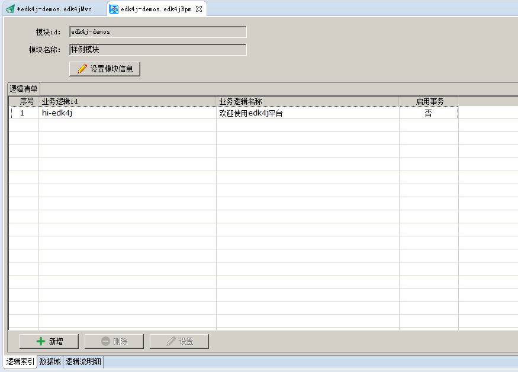
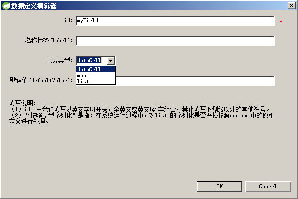
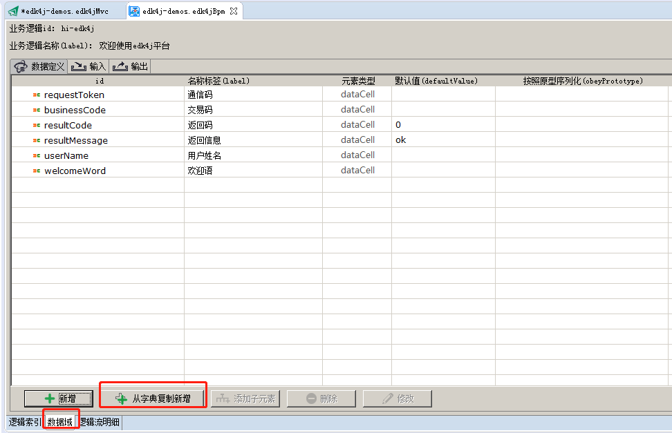
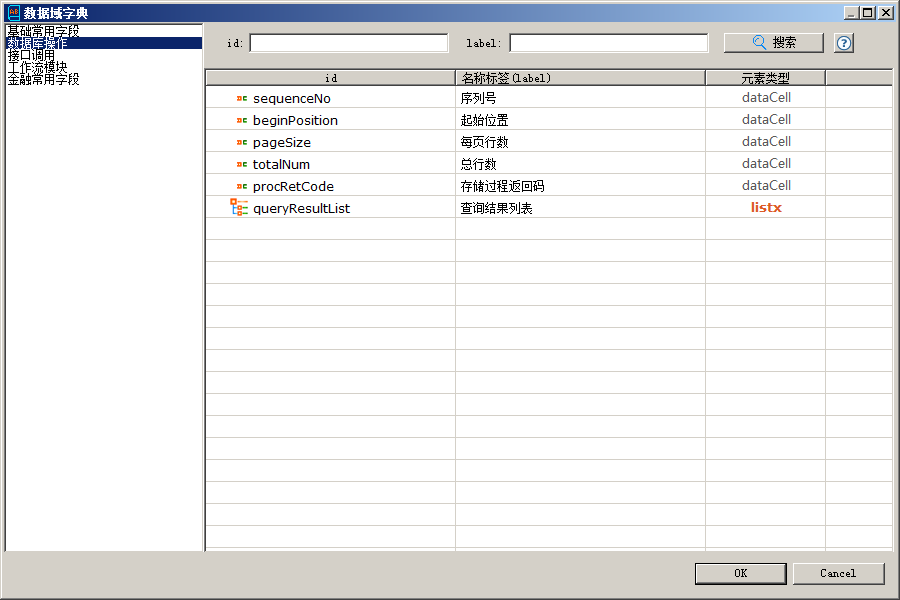
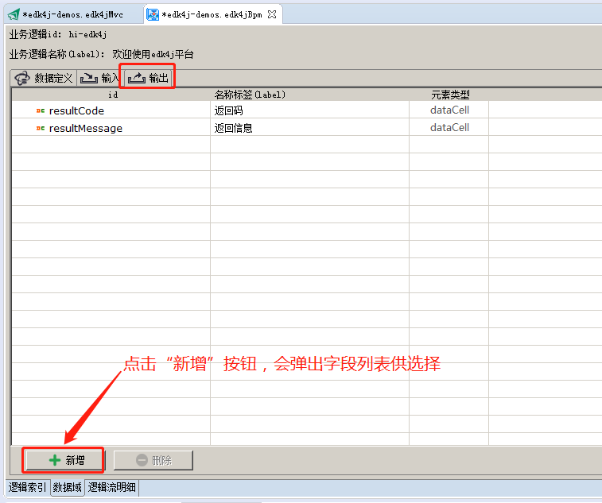
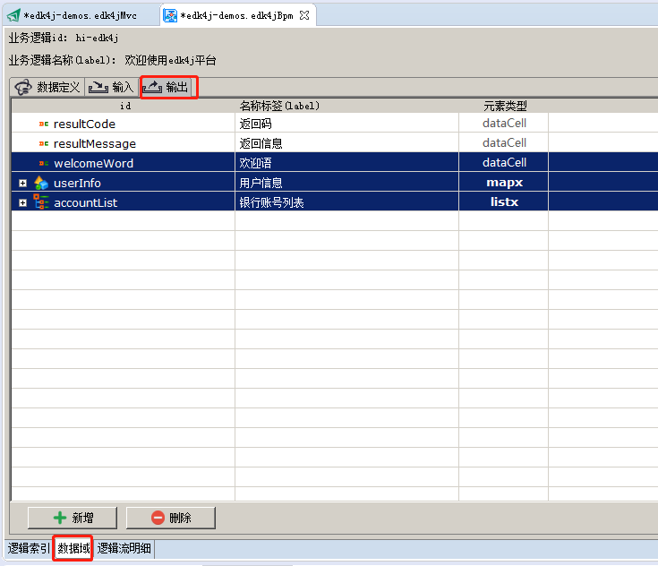
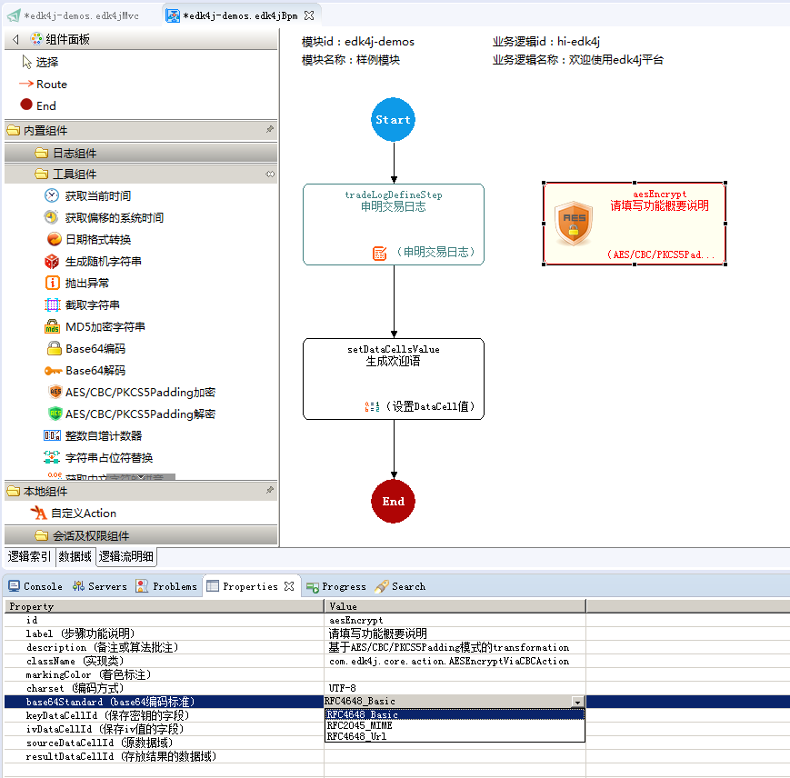

一个模块由一组业务逻辑构成，我们可以编辑模块的id以及名称

可以直接新增，也可以从数据字典中选择


也可以从数据字典中选择新增


可以为数据域中的listx或mapx添加子元素

点击“新增”按钮，会弹出选择框，从上下文context中进行选择。



编辑具体action中的某个属性值，有三种输入方式：（1）“直接输入”；（2）“下拉框选择”；（3）“弹出大编辑窗口”。
当弹出大的编辑窗口时，你可以根据需要，向内容中插入“context中数据域的id”，这在设置某些直接需要数据域id的字段、编辑list类型的属性、编辑“数据库操作”系列action的属性时非常有用，
需要注意的是，当选择完数据域ID后，分隔符等占位包装符你要核对修正。



双击路由线路，可在properties编辑页中编辑路由属性，同样可以直接编辑，或者点击右侧按钮弹出大编辑窗口。
在弹出窗口编辑时，可以参考aviator表达式写法。


向逻辑中添加“自定义action”时，会弹出选择框，你可以输入action名称进行选择，支持正则表达式模型查询